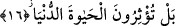

16. Fakat siz (ey insanlar!) dünya hayatını tercih ediyorsunuz,
Bu ifâde ifâdenin akışından anlaşıldığı üzere kendisinden önce var olduğu takdir
edilen bir cümleden başka bir yöne yönelme anlamını ifâde eder. Burada sanki şöyle
denmiş oluyor: İnsanı felaha götürecek şeylerin ne olduğu beyân edildikten sonra
insanoğluna dönülerek siz bunları yapmazsınız tam tersine siz gelip geçici olan dünya
lezzetlerini tercih eder, onları elde etmek için koşup çabalarsınız.
Âyetteki “siz dünya hayatını tercih ediyorsunuz” ifâdesiyle yapılan hitap ya
kâfirleredir ya da bütün herkesedir. Kâfirlere olduğunda dünya hayatının tercih edilmesi
demek, dünya hayatıyla yetinip, onunla hoşnut olmak, âhiretten adamakıllı yüz çevirmek
demektir. Nitekim Allah bu gerçeğe bir başka âyet-i kerimede şu şekilde işâret
buyuruyor: “Huzurumuza çıkacaklarını beklemeyenler, dünya hayatına razı olup
onunla hayat bulanlar ve âyetlerimizden gafil olanlar yok mu işte onların
kazanmakta oldukları (günahlar) yüzünden varacakları yer, ateştir.” (Yunus, 10/7,8)
Bu hitaptan maksad bütün herkes olduğunda; dünya hayatının tercih edilmesinden
maksad burada zikredilenden daha geniş olmuş olur. Bu takdirde bütün herkesin
genellikle bir türlü yapamadığı şekliyle dünya hayatının âhiret hayatına tercih edilmesi
daha çok dünya hayatı uğruna çalışıp çaba sarfedilmesi demek olur.
Yine hitap kâfirler için olması durumunda şiddetli tevbih ifâde eder. Hitabın kâfir
mümin herkesi kapsaması durumunda kâfirler için yine şiddetli tevbih, müslümanlar
hakkında ise şiddetli itab ifâde eder.
Fethu’r-Rahman’da ifâde edildiğine göre kâfir dünya hayatını küfür tercihi ile tercih
eder ve asla bir âhiret olmadığına inanır. Mü’min ise dünya hayatını mâsiyet ve nefsin
galebesi tercihi ile tercih eder, ancak Allah’ın böyle bir mâsiyete düşmekten koruduğu
kimseler bundan müstesnâdır.
Aynu’l-maânî’de ifâde edildiğine göre yukarıdaki âyette geçen hitab bütün ümmetedir.
Çünkü herkes dünyaya meyleder ya dünyayı arzulayarak bu hayata meyleder ya da âhiret
sevabı biriktirmek için bunu ister.
Keşfü’l-esrâr’da gelmiştir ki; Hz. Muhammed Mustafa (s.a.) dünya hakkında ilk
fetvasını şöyle kaleme aldı: Dünyanın helâli için hesap, haramı için azap vardır.
Dünyaya lânet etti ve “dünya mel’ûndur, Allah’ın zikri hâriç onun içindekiler de
mel’ûndur” buyurdu.
Eğer sana din lâzımsa dünyayı istemekten vazgeç
Eğer sana dünya lâzımsa dini ver yerine dünyayı al.
Eğer Cehennemden korkuyorsan dünya malıyla mağrur olma
Zira bu dünyada onun şekli mal ise de âhirette ejderhadır.
Bu aşağılık dünyada murdar kargalar gibi ne diye durursun
Kafesini kır, tavuslar gibi yücelere kanat çırp.